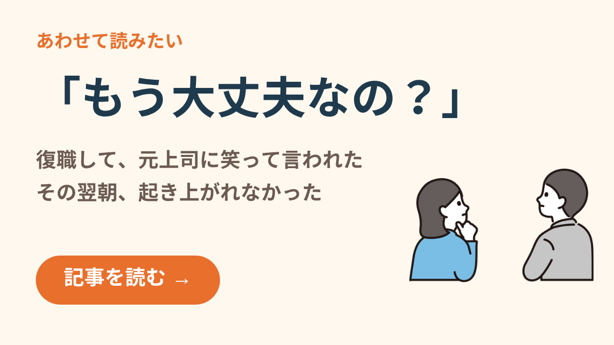
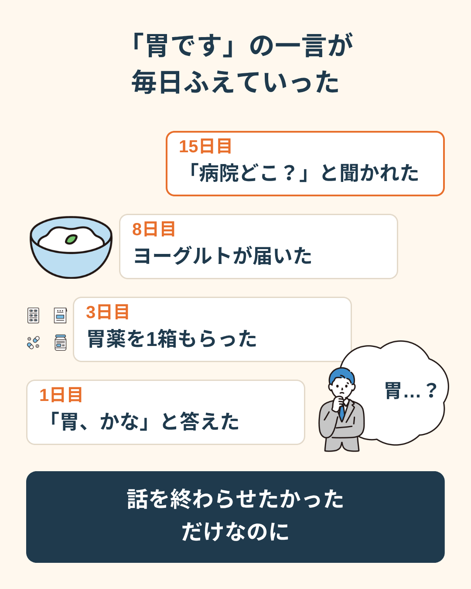
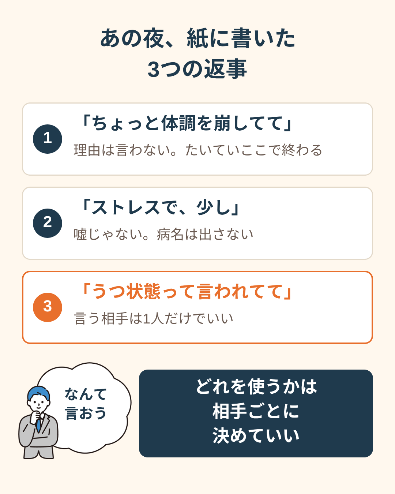
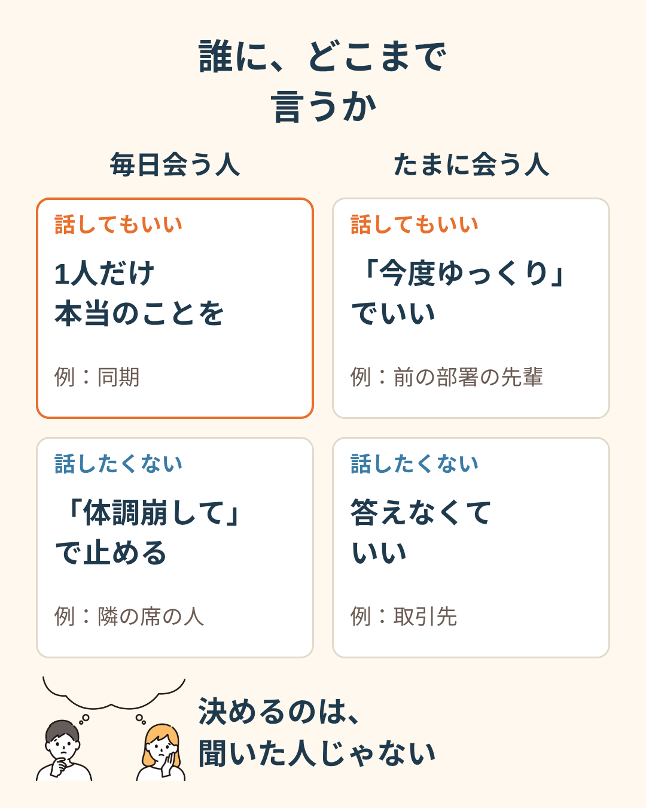
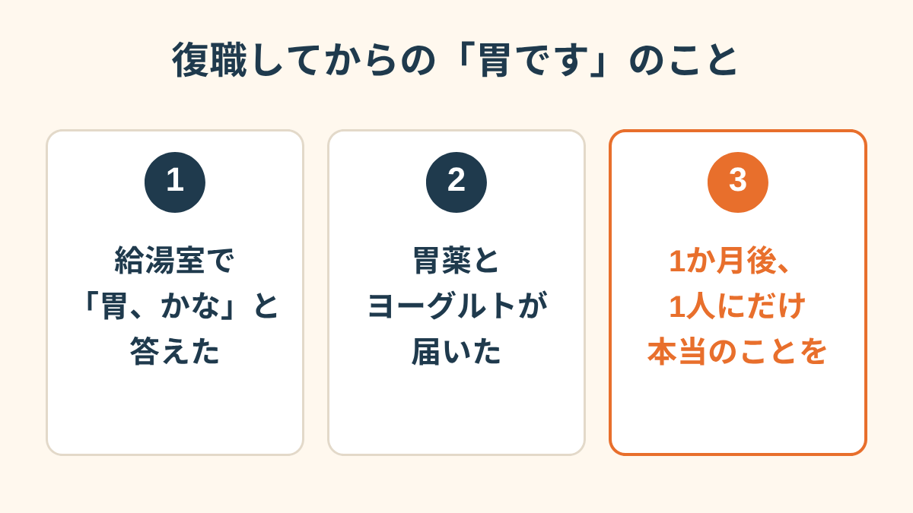

「で、結局なんだったの？」
給湯室で、紙コップにコーヒーを注いでいるときだった。同期の田村が、流しにもたれて、ほんとに軽い感じで聞いてきた。
「胃、かな」
口が勝手にそう言っていた。胃なんか、一度も悪くしたことがないのに。
「で、結局なんだったの？」
41歳。食品卸の支店で、受発注の事務をしている。支店は30人くらい。今年の5月から8月まで、うつ状態で4ヶ月休職して、9月1日に戻った。
戻る前の面談で、課長と人事とは「周りには、体調を崩して休んでいた、とだけ言っておく」と決めていた。課長は「みんな大人だから、そんなに聞いてこないよ」と言った。
最初の1週間は、本当に誰も聞いてこなかった。「おかえり」「無理しないでね」。それで終わり。ほっとしたのと、ちょっとだけ、気をつかわれてるなあ、という感じがあった。
2週目の木曜。給湯室で田村と2人になった。
田村とは入社が同じで、隣の課。休む前は、月に1回くらい昼にラーメンを食べに行っていた。いいやつだ。いいやつだから、聞いてくる。
「で、結局なんだったの？」
「いや、ちょっと体調崩して」
「体調って、どこ？」
ここで止まると思っていた。止まらなかった。田村の目は、心配と、ふつうの興味が半分ずつ、という感じだった。悪気がないのは分かる。分かるから、余計に困った。
「……胃、かな」
「あー、胃か！ 俺も去年ピロリ菌やってさ。あれ、薬飲むとき地獄だよな」
田村はそこから5分、ピロリ菌の話をした。私は「へえ」「そうなんだ」と言いながら、紙コップのコーヒーが冷めていくのを見ていた。「うつ状態」の5文字が、どうしても口から出なかった。
「私は復職初日の朝礼で、店長に『体調不良でお休みしてた〇〇さんです』って紹介されて。そのあと休憩室で、パートさんに『何の病気だったの？』って普通に聞かれました。とっさに『婦人科系で』って言ったら、誰もそれ以上聞いてこなくて。めちゃくちゃ楽でした。楽なんだけど、言うたびにちょっとずつ、自分が小さくなる感じがしてました」
元上司に「もう大丈夫なの？」と笑って言われて、次の朝起き上がれなかった人の話がある。聞く側に悪気がない一言ほど、あとから効いてくる。

復職4日目、元上司の一言のあとに起きたこと →胃薬、ヨーグルト、胃腸科
3日後。朝、机の上に胃薬の箱が置いてあった。付箋に「これ効くよ 田村」。
箱は、そのまま引き出しの奥にしまった。飲んでいない。捨てることもできなかった。
次の週の月曜から、朝、机にコンビニのヨーグルトが置かれるようになった。小さいカップのやつ。付箋には「乳酸菌」とだけ書いてあった。火曜も、水曜も。
会社の冷蔵庫に入れておいて、帰りに持って帰って、家で食べた。妻に「最近ヨーグルト買ってくるね」と言われて、「うん」とだけ答えた。家でもまた、ひとつ説明できないことが増えた。

また給湯室で。
「胃、どこの病院行ってんの？ 駅の向こうの胃腸科、うまいらしいよ。カメラ全然痛くないって」
私が月に2回、半休をとって行っているのは、心療内科だ。
「あ、うん、今のとこで大丈夫」と言って、席に戻った。キーボードの上で手が止まって、受注の数字が頭に入ってこなかった。次の通院の半休届に「通院」と書くか「胃の検査」と書くか、本気で5分くらい迷った。嘘を守るために、また嘘を考えている。そこで、さすがにまずいと思った。

その夜、紙に書いた3つの返事
その夜、子どもが寝てから、食卓でレシートの裏に書いた。次に聞かれたら、なんて言うか。
最初に書いたのは「ちょっと体調崩してて」。課長と決めた言い方だ。理由は言わない。たいていは、ここで話が終わる。終わらなかったのが、田村だった。
次に「ストレスで、少し」。これは嘘じゃない。病名も出さない。書きながら、これなら言えるかもしれない、と思った。
3つ目に「うつ状態って言われてて」と書いて、ペンが止まった。字にしただけで、心臓が少し速くなった。

書いてみて、ひとつ気づいた。3つのうち、どれかひとつに決めなくていいんじゃないか。
隣の席の人には1つ目で止める。もう少し近い人には2つ目。3つ目は、言いたい相手がいたら、その人にだけ。そういうふうに、相手で分けていいんじゃないか。
その週、倉庫のパートの女性に、休憩室で言われた。「うつだったんでしょ？ うちの甥っ子もそうでさ」。
知ってたのか、と思った。誰が言ったのかは分からない。課長かもしれないし、誰かの想像かもしれない。あんなに守っていたのに、と力が抜けた。その人には「まあ、体調崩してて」とだけ返して、トイレに行った。

「私は7ヶ月休んで、復職初日の朝礼で自分から言いました。うつ病でした、って。言った瞬間、空気がちょっと変わったのが分かりました。半分くらいの人は前と同じに話してくれて、半分は、正直、腫れ物でしたね。言ったことは後悔してないです。でも、誰にでも勧めるかって言われたら、勧めない。自分は、隠し続けるほうがしんどいタイプだっただけなので」
駐車場で、1人にだけ
10月の最初の金曜。帰りの駐車場で、田村と車が隣だった。
「ヨーグルト、もういらない？ 胃、よくなった？」
ドアに手をかけたまま、10秒くらい黙っていたと思う。財布の中のレシートのことを考えていた。
「……ごめん、胃じゃないんだ。うつ状態って言われて、休んでた」
田村は、車のキーを持ったまま、しばらく何も言わなかった。それから、
「そっか。……俺、聞きすぎたな。ごめん」
「いや。ヨーグルトはうまかった」
そう言ったら、田村が少し笑った。私も、たぶん少し笑った。
翌朝、机にヨーグルトはなかった。それはそれで、ちょっとさみしかった。田村はそれから一度も、病気のことを聞いてこない。昼のラーメンには、11月に入ってから1回だけ行った。
パートの女性には、今も「体調崩してて」で通している。隣の席の人にも。それでよかったのかは、正直まだ分からない。胃薬の箱も、まだ引き出しの奥にある。

この記事に、聞いてみたいことはありますか？
「自分の場合はどうなんだろう」と思ったことを、気軽に書いてみてください。いただいた質問は個別にお返事したうえで、匿名で記事にすることがあります。